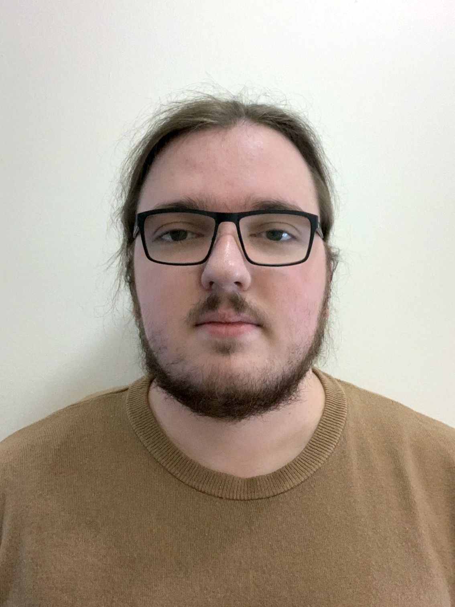

I am a BA Game Design graduate pursuing MA in Game Design.
Interested in low-level and system-level programming.
Firmly believe in fair and open-source software.
I have been living in Kent, UK for 10 years now and I love it here.
- Programming
-- C++11/14, C, Python, C#.
- Have interest in
-- Zig, Rust.
- System adminestration
-- Linux, pfsense, hardware.
- 3D modelling
-- Blender and Substance Painter.
- Game Desig
-- Unreal Engine, Unity, Raylib, Godot.
- Education
-- Coaching eSport players.
-- Educational videos and articles.
- Misc
-- If there is a config, I must tinker.
-- Spending 2 hours automating a 5 minute task.
Canterbury Christ Church University
- (2022-2023) Games Design MA
- (2019-2022) Games Design BA with First-Class Honours
Canterbury College
- (2015-2017) BTEC Level 3 Diploma in IT with D, M
Chaucer Technology School
- (2013-2015) GCSEs
(2016 - now) Freelance
- Python
-- Developed a user-facing interface for students of an educational facility.
-- System automation.
-- Information processing.
- C++
-- Contributing to open-source.
- System adminestration
-- Setup hardware and software for linux servers, routers.
- Design
-- Designed and published modern version of old fixedsys font.
(2017 - now) Metafy.gg (Formally Gamersrdy)
- Individual eSports coach focused on CS:GO / FPS
(2020, 2022-23) Research Internship - Arcade Britannia VR
- 3D modelling and texturing arcade cabinets for use in-game engine.
- Project design and managment.
Fixedsys Modern [Custom vector font based on old bitmap font]
I am a big fan of Fixedsys Excelsior, which is an old DOS era bitmap font. Sadly with the average resolution increasing, it became too small for comfortable use. And since it is a bitmap font, scaling results in blurry results. So eventually, I was forced to switch, but I have always missed it since. Finally, I had enough; if no one is willing to make a modern version of it, I will make it myself! I started this project without any experience in Font design, nor vector graphics. The next week was spent making iteration after iteration, seeking feedback from other online users who missed Fixedsys and making it slightly better each time. The final ready-to-use font with all materials I made is available on GitHub. This project taught me that having the audacity to try is very important. I had no business making fonts, yet I made my long-time wish come true! It is not perfect, but it is certainly better than hoping someone else makes it for me.
Cauliflower Knight [Collaborative Final Uni Project UE4/C++]
This is the first project developed by Walkover Games, Cauliflower Knight is a 3D puzzle platformer where player controls two characters to solve puzzles, traverse levels and combat foes. Trailer of the demo can be found here.
Arcade Britannia VR [3D Models For UE4 VR Experience]
The goal of the project is to create an authentic VR experience of visiting the real arcade, overview of the internship results can be found here. The project was taken further by MA 2021 students, I will be joining development team once again during my own MA in 2022.
This page was generated at 12:25:00 2022/12/22 London, UK
Copyright 2021-2022 Mihails 'Delinx' Mozajevs.
Contact: mail@del.cx
{kind=link}